Task 7c - Verify vEdge Cloud Devices Connectivity
Two (2) vEdges have been pre-configured with appropriate configurations in AWS. This task will walk through the steps to verify vEdge Cloud devices connectivity..
Pre-requisite 1: SDWAN controllers must be fully operational. If those are not installed (or operational) then please complete the previous Tasks first.
Pre-requisite 2: Pre-configured three (3) vEdges (in Branch 1, Branch 2 and DC) must be fully operational. If those are not operational then please complete the previous Tasks first.
Pre-requisite 3: At least 2 vEdge Cloud devices with AWS templates must be provisioned in Transit VPC successfully. If these instances are not running in AWS then please complete Task 7b first.
Step 1: Verify vEdge Cloud Devices Connectivity using vManage GUI
In this step we will verify vEdge Cloud Devices that they have established connection to the Control Plane. You will use real-time monitoring capabilities of vManage GUI.
- Log on the vManage from a web browser (if not already open) and use credentials of
adminandadmin:
https://198.18.1.10
| Note: |
|---|
If admin/admin credentials do not work then you may try using cisco/cisco or cisco1/cisco1 |
- The vManage dashboard will be displayed. At the top, a status indicating reachability will be displayed for any vSmart controllers, vEdge routers, and vBond orchestrators that are installed and have been added to vManage. Verify the vEdges are all showing up before moving on. The number of controllers will be shown with a green up arrow (indicating reachable), or a red down arrow (indicating unreachable).
- The Control Status should show that all of the control connections are up for all vEdge routers and vSmart controllers, and the Site Health View should show Full Connectivity to all sites, the data center, branches and public cloud (AWS).
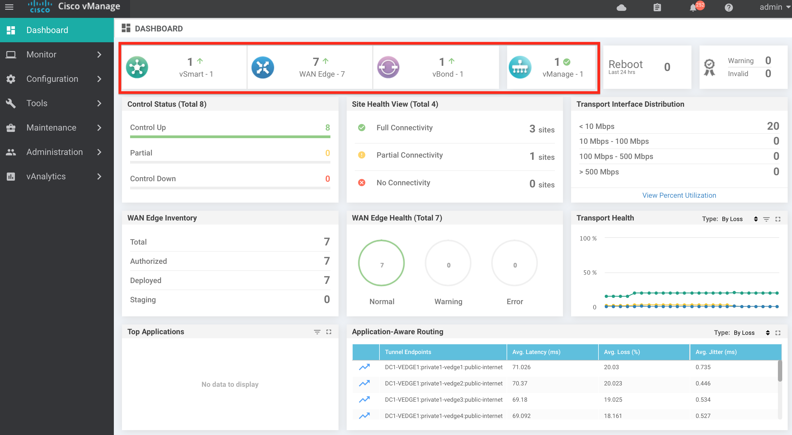
* On the vManage GUI, navigate to Configuration > Devices to view running configuration on vEdge1.
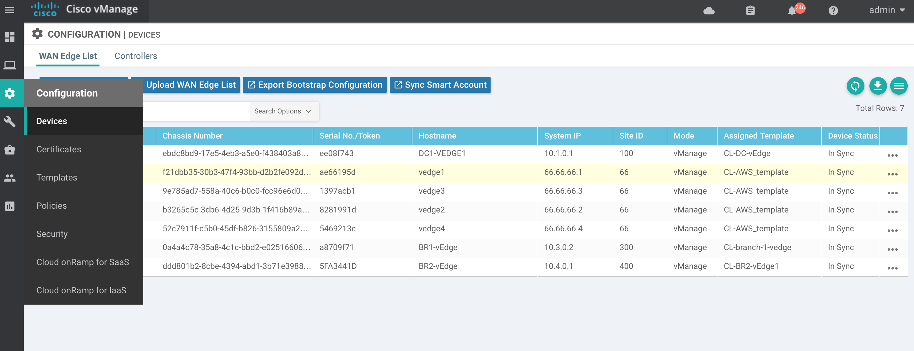
- Make sure
WAN Edge Listis selected in Devices GUI. SelectvEdge1then Click the three dots...on the right side of this device and SelectRunning Configurationoption from the drop down menu as shown in the below screenshot.
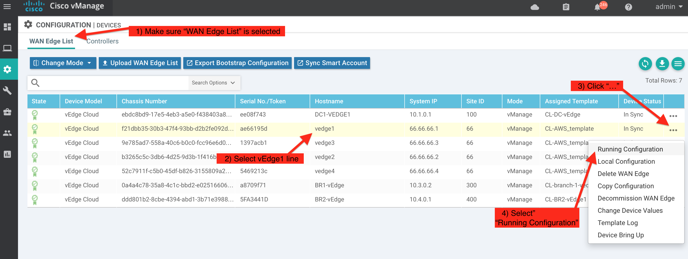
- You can review and verify that;
- this configuration is the same one added via CLI Template in Step 1 Task 7a
- the vEdge has been pre-configured with below system related configurations:
- hostname
- system-id
- site-id
- organization name
- vBond DNS name of
vbond.cisco.com
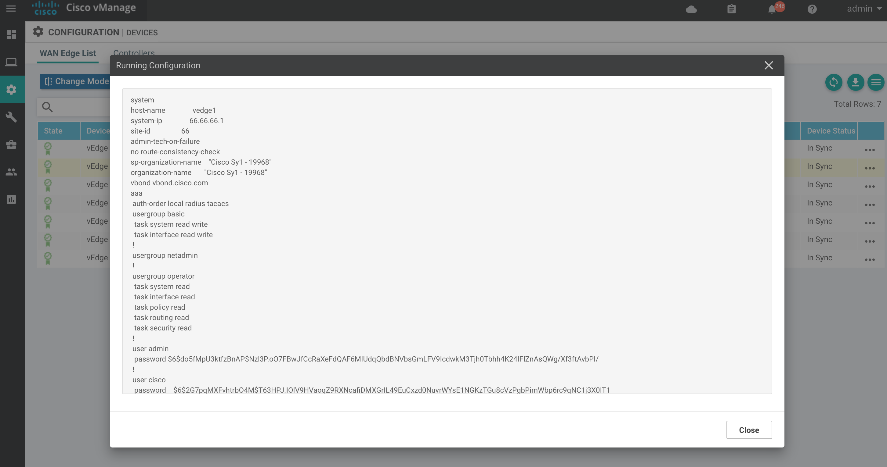
| Note: |
|---|
A static DNS entry for the hostname vbond.cisco.com has been configured under vpn 0 (vbond Public IP address will be visible when you scroll down). vpn 0 is the WAN Transport VPN. |
- Below screenshot shows
vpn 0configuration and confirm that:- vEdge has one WAN link (interface ge0/0)
- WAN link tunnel interface is configured with
color public-internetwhich is a public color - Review the config and then Click
Close.
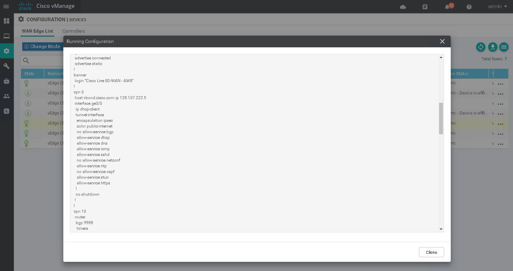
- On the vManage GUI, navigate to Configuration > Certificates to verify that certificate has been installed and vEdge device in
Validstatus.
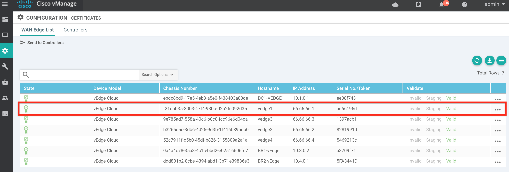
-
On the vManage GUI, navigate to Monitor > Network.
- You can verify that vEdge1 is reachable and has a total of two (2) control connections. In order to visualize the control connections that have been established you need to navigate to vManage > Monitor > Network > vEdge1 > Control Connections.
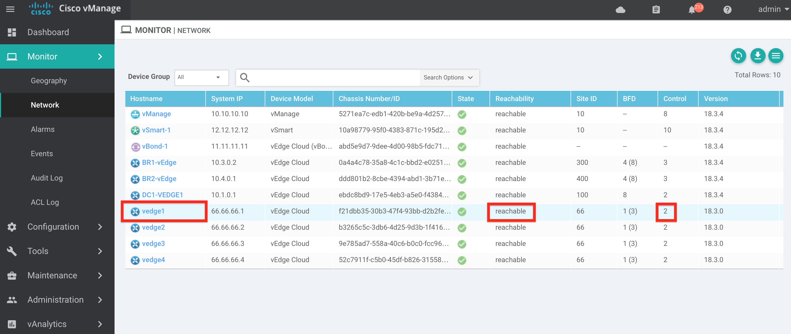
- Click vEdge1 and then Control Connections to verify that vEdge1 has established two (2) connections to the Control Plane.
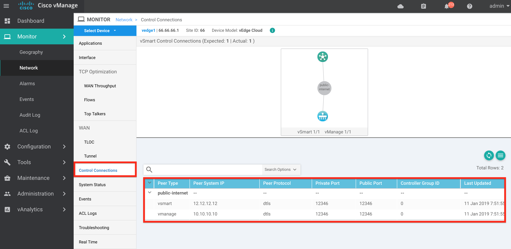
-
From the screenshot you can;
- Confirm that valid System IP addresses, Protocols, Private and Public ports of vSmart and vManage
- Confirm two(2) control connections
- validate vEdge1 has one (1) control connection established to vSmart controller
- validate vEdge1 has one (1) control connection established to vManage
-
To view the state of all of the IPSec tunnel or data plane connections, select Tunnel under the WAN menu in the left column.
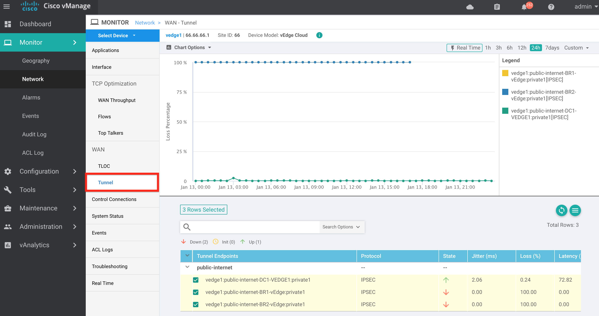
- Click Real Time
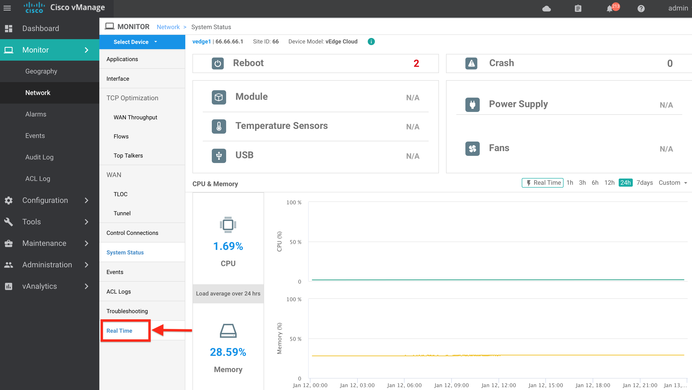
- Then, enter
BGP Neighborsand click Do not Filter on the Select Filter pop-up window
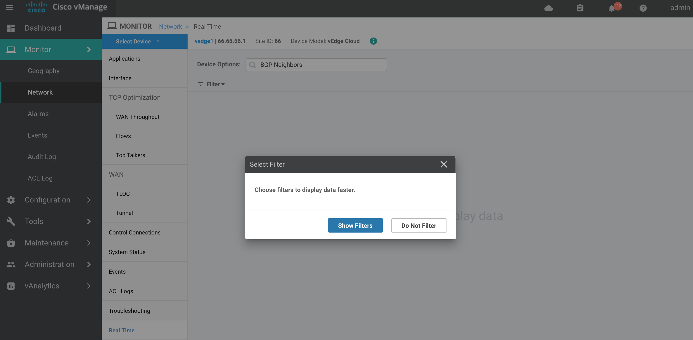
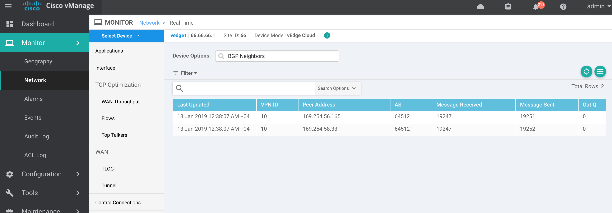
- Enter
IP Routes
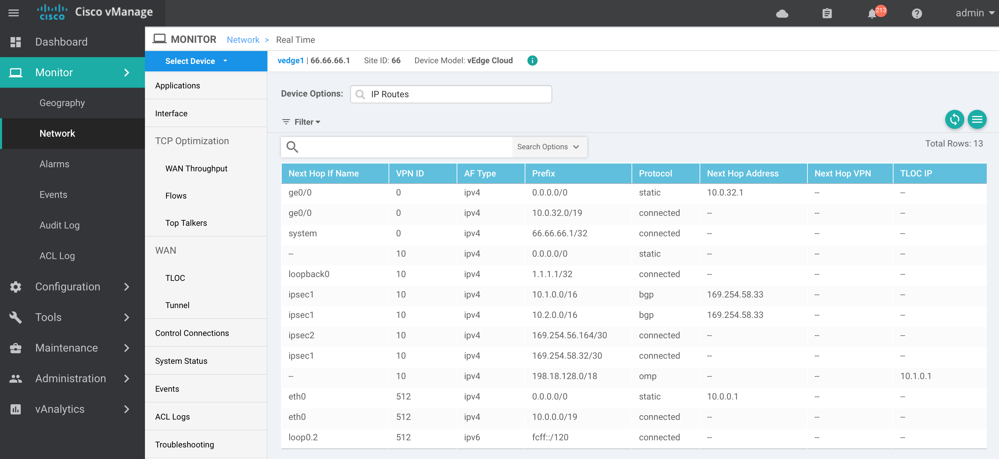
- Execute same verification steps for vEdge2.
Step 2: Verify vEdge Cloud Devices Connectivity using vManage SSH Terminal
In this step we will use SSH terminal screen to establish an SSH session to the vEdge1 and vEdge2 then verify Control Plane connections using CLI commands.
- Log on the vManage from a web browser (if not already open) and use credentials of
adminandadmin:
https://198.18.1.10
| Note: |
|---|
If admin/admin credentials do not work then you may try using cisco/cisco or cisco1/cisco1 |
- On the vManage GUI, navigate to Tools > SSH Terminal. From the left pane, select the device group to which the device belongs.
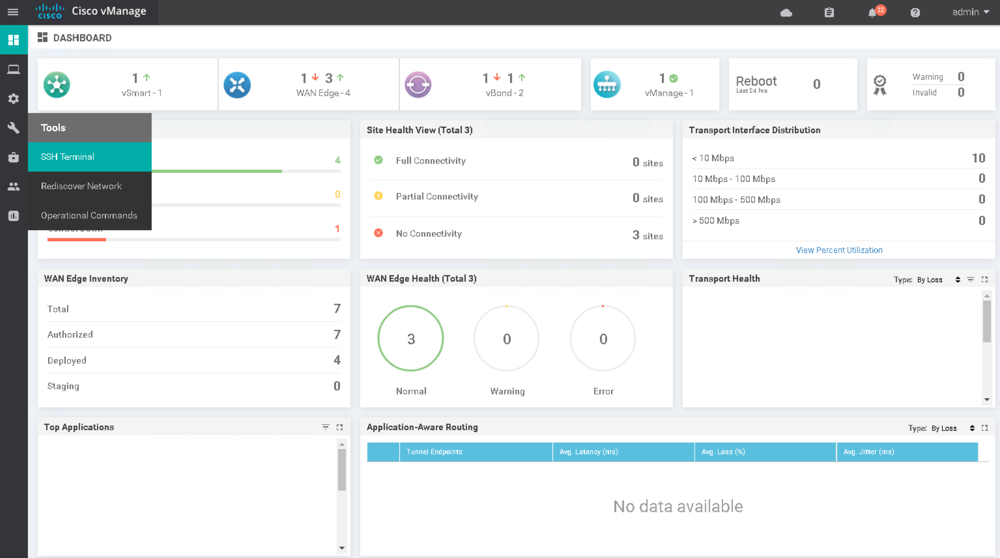
* Click on vEdge1 and on the right pane.
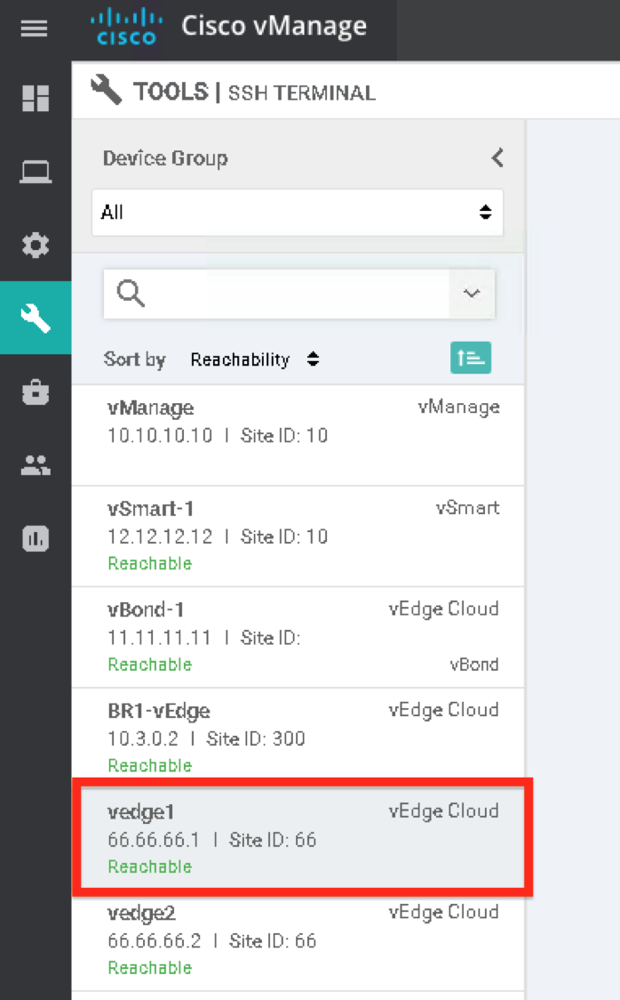
- Enter the SSH credentials (username and password) as follows:
adminandadminrespectively to log in to the device.
| Note: |
|---|
If admin/admin credentials do not work then you may try using cisco/cisco or cisco1/cisco1 |
-
On the SSH connection, execute the below command to verify that system related configurations on this vEdge:
show run systemAs shown in the partial output in the below screenshot, the vEdge has been pre-configured with below system related configurations: * hostname * system-ip * site-id * organization name * vBond DNS name of
vbond.cisco.com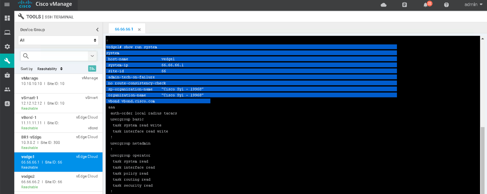
| Note: |
|---|
A static DNS entry for the hostname vbond.cisco.com has been configured under vpn 0 (it will be visible in subsequent bullet) |
-
Execute the below command to see the configuration related to WAN connections or Transport connections on this vEdge. In Cisco SD-WAN, VPN 0 is allocated for Transport/WAN links:
show run vpn 0Below screenshot shows the partial output of this command. This command will confirm that: * vEdge has one WAN link (under VPN 0) as per interface ge0/0 configuration * WAN link tunnel interface is configured with color public-internet which is a public color
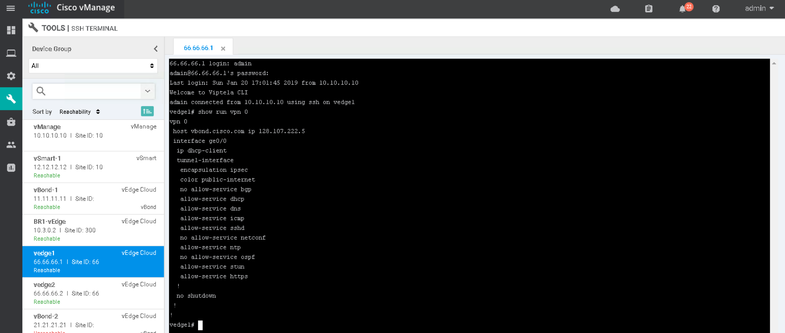
-
You may also execute
show runcommand to view the full configuration of this vEdge -
Run the below commands to verify that certificate has been installed and view the details of certificate respectively
show certificate serial show certificate installedBelow screenshot shows the partial output of the above command. Note that Issuer of the certificate is vManage
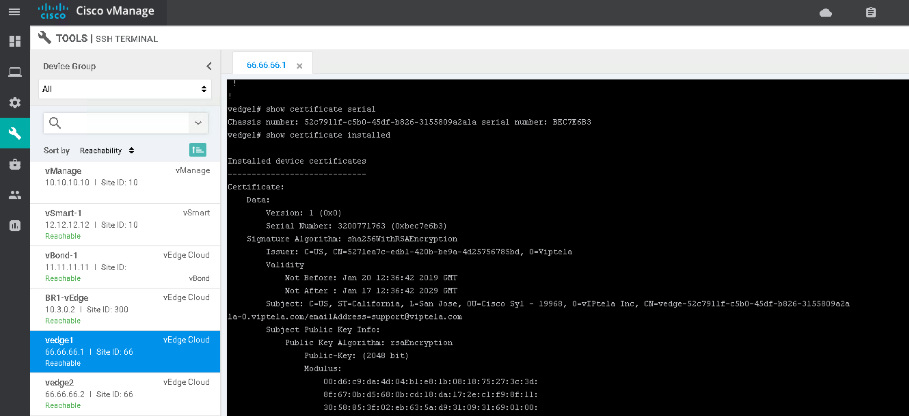
-
Run the below command to see the list of control connections of this vEdge to the Control Plane (vManage, vSmart)
show control connectionsBelow screenshot shows the output of this command. Note it validates that vEdge1 has: * One (1) control connections established to vSmart Controller * One (1) control connection established to vManage
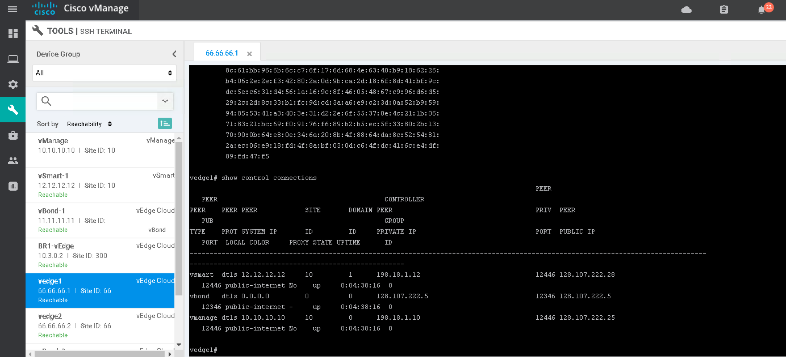
-
In order to verify that related template is successfully attached, execute below command:
~~~ show system status ~~~
The output of above command should show that it is centrally configured by vManage and also provides the name of Template:
vManaged: trueConfiguration template: CL-AWS_template
Below screenshot shows the partial output of above command:
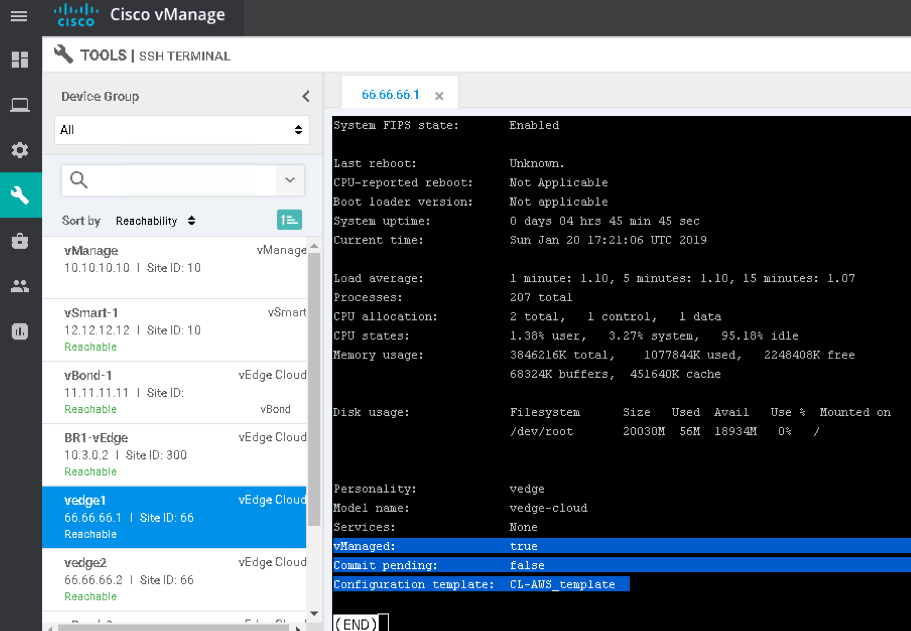
Note: you can also verify the Mode (vManaged or CLI) on vManage GUI by navigating to Configuration > Devices and under WAN Edge List tab scrolling to the right will show the
Modeoption for each device. If there are any discrepancies then refer to the instructor.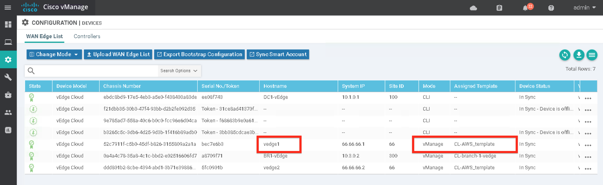
-
You can run various other commands to verify the updated configurations (such as DHCP on interface ge0/0, control connections to Controllers on this new interface etc) as reflected in "CLI Template":
show interface show ip route show control connections show run -
Execute same verification steps for vEdge2.
This concludes the process to verify the two (2) vEdge Cloud devices in Public Cloud using two options; vManage GUI and vManage SSH Terminal.